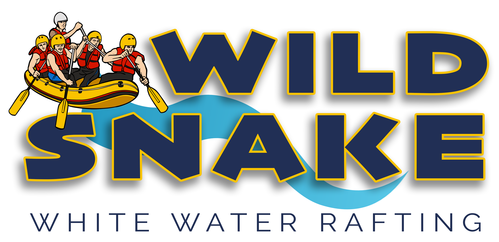

OVERVIEW
PURPOSE
The purpose for this website is to create a simple and easy to read landing page for customers to see the different types of excursions we offer. As we have many beginners, we would also like an educational page about the experience, like what to expect and safety information so that everyone can feel confident as they book their white water rafting tour.
AUDIENCE
Our customers have extra money to spend on excursions. They have an active lifestyle and are either beginners at white water rafting and need all of the equiptment and a tour guide, or they are experienced rafters who just want to rent equiptment. We are located in Idaho in Hells Canyon on the Snake River, and have both local customers and vacationers who love the mountains and adventure. There is another company up here with really high prices, so we would like to offer and equally exciting and safe experience for a more affordable price while still making money. The customer base is often younger and will be accessing the content mostly on their mobile devices, but desktops and laptops will be used as well.
BRANDING
WEBSITE LOGO
STYLE GUIDE
COLOR PALETTE
PALETTE URL:
https://coolors.co/212f55-3aadd1-f9c300-d61500-e3e2e2-2a2725-ffffff| Primary | Secondary | Accent 1 | Accent 2 | Base1 | Base2 | Base3 |
|---|---|---|---|---|---|---|
| [#212f55] | [#f9c300] | [#3aadd1] | [#d61500] | [#ffffff] | [#e3e2e2] | [#2a2725] |
TYPOGRAPHY
HEADING FONT: JOSEFIN SANS
PARAGRAPH FONT: RALEWAY
NORMAL PARAGRAPH EXAMPLE
The best Whitewater Rafting in Colorado, White Water Rafting Company offers rafting on the Colorado and Roaring Fork Rivers in Glenwood Springs. Since 1974, we have been family owned and operated, rafting the Shoshone section of Glenwood Canyon and beyond.
COLORED PARAGRAPH EXAMPLE
Trips vary from mild and great for families, to trips exclusively for physically fit and experienced rafters. No matter what type of river adventures you are seeking, White Water Rafting Company can make it happen for you.
NAVIGATION
SITE MAP
WIREFRAMES
HOME